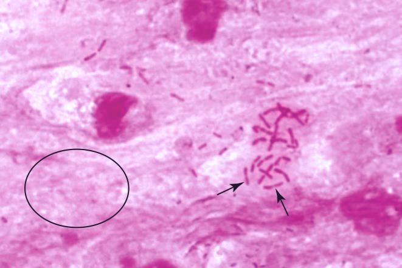

| PBL 1317 Case 2 Sputum |
|
|  |
 |
| The sputum specimen (on left) contains widespread proteinaceous material that stains pink (ellipse). There are many Gram negative (pink) rods (arrows). The "control" specimen, stained identically from a sputum specimen not containing bacteria, shows that the patient's specimen was not over-destained. | |